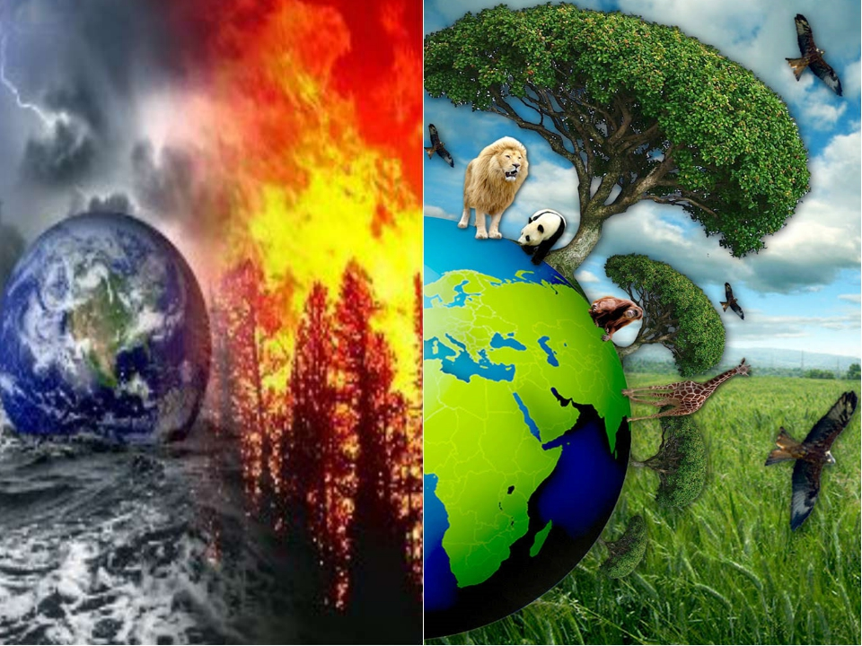

Сегодня озон беспокоит всех, даже тех, кто раньше не подозревал о его существовании, а считал только, что запах озона является признаком свежего воздуха. В настоящие время необходимо принять меры, что бы избежать экологической катастрофы.
Для решения проблемы необходимо:
- Пропагандировать защиту озонового слоя среди школьников путем проведения внеклассных часов;
- Информировать население через средства массовой информации (новости о погоде) об уровне УФ излучения и предупреждать население о вреде избыточного воздействия солнечных лучей на незащищенную кожу. Разработать памятки и вручать их людям при прохождении профессиональных осмотроф в поликлиниках города.
- Организовать проведение на всероссийском, региональном и городском уровнях конкурсов среди школьников для их вовлечения в международную проблему по защите озонового слоя;
- Администрациями городов проводить специальные мероприятия (конференции, семинары) для руководителей объектов, загрязняющих окружающую среду;
- Создать больше парковых зон, обеспечить защиту лесов от пожаров;
- Усилить работу по наблюдению за состоянием озонового слоя, проводить анализ причин изменений озонового слоя и обеспечить оценку вредных свойств новых химикатов в отношении разрушения озона;
- Провести Международные телемосты на тему предотвращения экологической катастрофы и сохранения озонового слоя с участием ведущих ученых, политических, религиозных и общественных деятелей;
- Обеспечить дальнейшее развитие российского законодательства об охране озонового слоя;
- Обеспечить переход с применения химических удобрений на органические;
- На всех объектах, сильно загрязняющих окружающую среду, установить на дымовые трубы очистительные устройства(фильтры);
- Усилить исследования в рамках технологий и замещающих соединений, позволяющих использовать холодильную технику, кондиционирование воздуха и теплоизоляционные пеноматериалы, не нанося ущерб озоновому слою;
Как видно, ответы достаточно просты и очевидны, но одновременно и сложны, поскольку проблема имеет социально-экономические и политические аспекты. Для ее успешного решения необходима благоприятная обстановка доверия и мира, международное сотрудничество.
